Duelos
Sistemas Operacionais
Duelo 1Windows Vista vs Fedora |
||
| 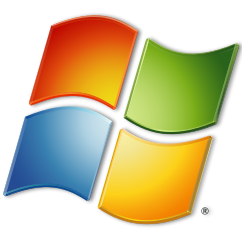 |
X | 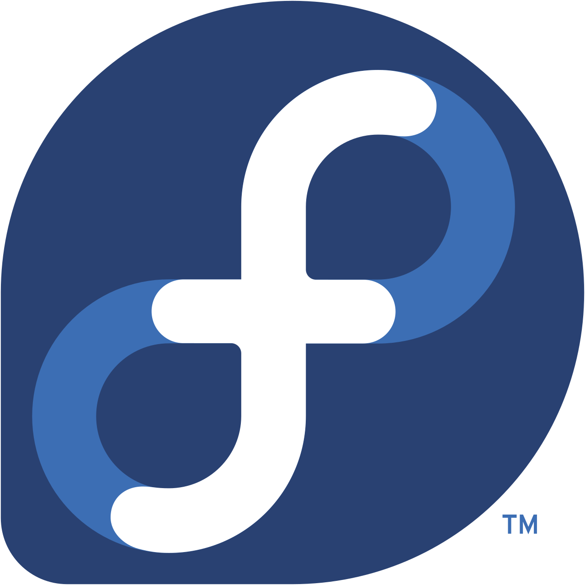 |
| O Windows Vista, lançado em 2006, introduziu melhorias significativas na interface gráfica e segurança, substituindo o Windows XP. Incluía o WordPad básico para edição de texto e aprimorou o reconhecimento de escrita manuscrita e ditado de texto em tablets. Atualmente, o sistema está desatualizado, sem suporte oficial da Microsoft. | X | O Fedora Linux é uma distribuição robusta, focada em software livre, estabilidade e novas tecnologias, patrocinada pela Red Hat. É ideal para desenvolvedores e usuários avançados, com a versão Workstation sendo o padrão para desktops. O sistema utiliza o gerenciador de pacotes DNF e o GNOME como interface padrão. | Duelo 2WIndows Vista vs Fedora |
| 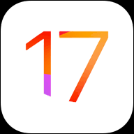 |
X | 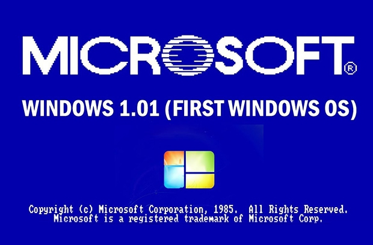 |
| O iOS 17, lançado em setembro de 2023, personaliza o iPhone com Pôsteres de Contato, "Em Espera" (tela inteligente durante o carregamento) e NameDrop para compartilhar contatos via AirDrop. Destacam-se o corretor de texto inteligente, "Chegou Bem" no iMessage e transcrição automática de áudio. | X | O Windows 1.01, lançado em 20 de novembro de 1985, foi a primeira interface gráfica da Microsoft para MS-DOS, introduzindo janelas, uso de mouse e multitarefa básica. O sistema incluía aplicativos essenciais como Bloco de Notas, Paint, Calculadora e o editor de texto Write (ou WR), marcando a transição de comandos de texto para um ambiente gráfico | Duelo 3WIndows Vista vs Fedora |
| |
X | 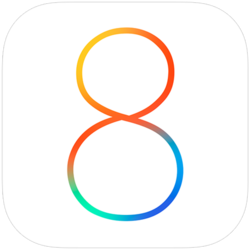 |
| O Debian é um sistema operacional livre, baseado em Linux, renomado por sua estabilidade e segurança, amplamente utilizado em servidores e estações de trabalho. Ele suporta diversos editores de texto no terminal (como vim, nano, joe) e ferramentas de processamento de texto (sed, awk) para manipulação de arquivos. | X | O iOS 8, lançado pela Apple em setembro de 2014, trouxe recursos essenciais como a biblioteca de fotos do iCloud, o teclado preditivo QuickType e o app Saúde. Focado em integração, permitiu enviar SMS via Mac e introduziu a função de "falar seleção" para leitura de textos em acessibilidade. | Duelo 4WIndows Vista vs Fedora |
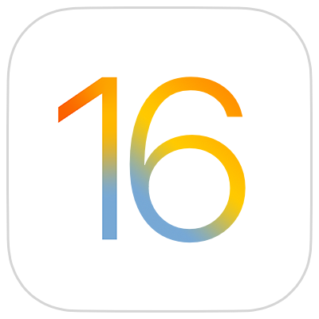 | X | 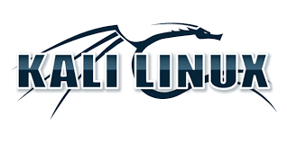 |
| O iOS 16 trouxe recursos avançados para manipulação de texto, incluindo a expansão do "Texto ao Vivo" (Live Text) para vídeos, permitindo copiar, traduzir e converter moedas diretamente da imagem. A atualização também introduziu a capacidade de editar ou cancelar o envio de mensagens no iMessage em até 15 minutos. | X | O Kali Linux é uma distribuição baseada em Debian, otimizada para testes de penetração e segurança. Inclui ferramentas para editar arquivos de texto, como nano, vi ou editores gráficos. Arquivos podem ser criados via terminal com touch ou cat >. A navegação usa comandos como ls e cd. | Duelo 5WIndows 7 vs OpenSuSe |
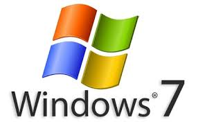 | X | 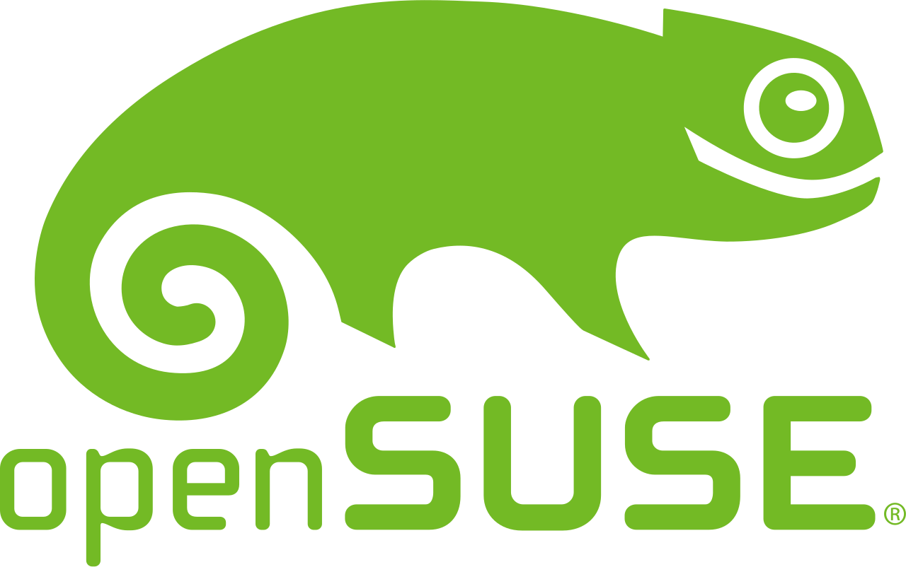 |
| Para editar textos no Windows 7, utilize o WordPad (acessível em Iniciar > Todos os Programas > Acessórios) ou o Bloco de Notas para arquivos simples. Para ajustar o tamanho das fontes e textos no sistema, acesse o Painel de Controle, selecione "Aparência e Personalização" e depois "Vídeo" para aumentar a legibilidade. | X | O openSUSE é uma distribuição Linux estável e versátil, ideal para iniciantes e profissionais, oferecendo as versões Leap (estável) e Tumbleweed (rolling release). Patrocinada pela SUSE, destaca-se pela ferramenta de configuração YaST, alto desempenho e forte comunidade. É adequada para servidores e desktops, focando em segurança e código livre. | Duelo 6iOS 9 vs iOS 10 |
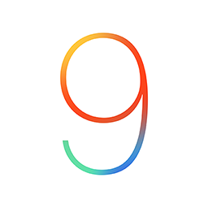 | X | 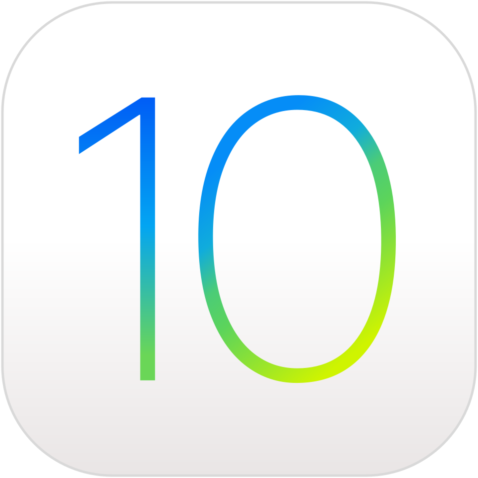 |
| O iOS 9, lançado em setembro de 2015, focou em melhorias de desempenho, inteligência e multitarefa para iPad (Split View, Slide Over). Introduziu o modo de Baixa Energia, a fonte San Francisco, notas redesenhadas e a assistente Siri mais proativa. A atualização otimizou o consumo de bateria e reduziu o espaço ocupado no dispositivo. | X | O iOS 10, lançado em 2016, trouxe atualizações significativas, incluindo um iMessage remodelado com stickers e efeitos, Siri mais inteligente e melhorias no desempenho. O sistema introduziu notificações ricas interativas e uma interface redesenhada, consolidando a fonte San Francisco em todo o sistema. | Duelo 7Gentoo Linux vs Windows 11 |
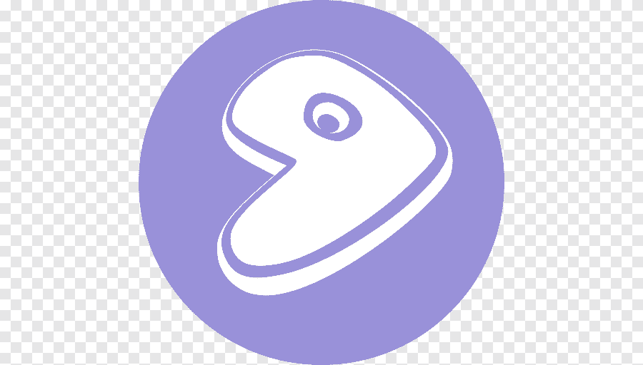 | X | 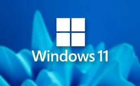 |
| O Gentoo Linux é uma distribuição baseada em código-fonte, conhecida por sua altíssima flexibilidade e desempenho, voltada a usuários experientes. Utiliza o gerenciador de pacotes Portage, que compila softwares localmente e sob medida para o hardware específico da máquina. A instalação é um processo manual e educacional, focado em criar um sistema enxuto e otimizado. | X | O Windows 11 oferece diversos recursos nativos para trabalhar com textos, desde a digitação e formatação até ferramentas avançadas de IA e acessibilidade. | Duelo 8Redhat vs Linux 6.15 |
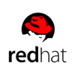 | X | 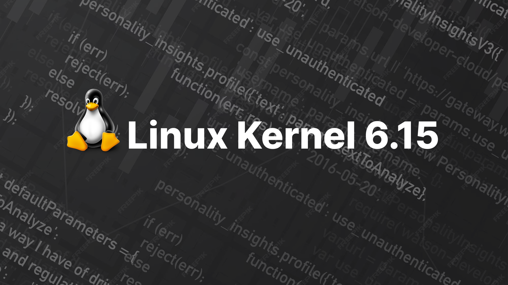 |
| O Red Hat Enterprise Linux (RHEL) é um sistema operacional Linux líder de mercado, projetado para ambientes corporativos, servidores e nuvem híbrida. Focado em estabilidade, segurança avançada (SELinux) e suporte de longo prazo, o RHEL suporta cargas de trabalho físicas, virtuais e em nuvens públicas como AWS, Azure e Google Cloud. | X | O Linux na versão 6.x (atual) continua sendo o sistema operacional fundamental para servidores, nuvem e dispositivos embarcados, mantendo forte ênfase no uso da linha de comando (terminal) e editores de texto baseados em caracteres. A edição de texto, especialmente em arquivos de configuração, é comumente feita através do vi ou vim, editores poderosos e modais, embora complexos para iniciantes. | Duelo 9Arch Linux vs WIndows nt |
| X | 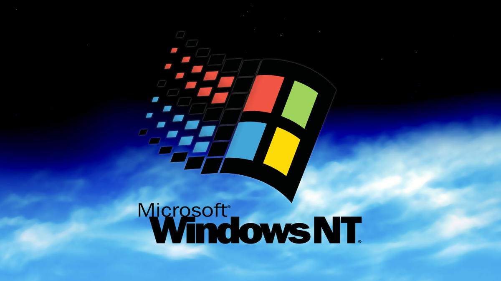 | |
| O Arch Linux é uma distribuição Linux independente, baseada na filosofia KISS (Keep It Simple, Stupid), focada em simplicidade, leveza e personalização pelo usuário. Utiliza o modelo rolling release (atualização contínua) e o gerenciador de pacotes Pacman, ideal para quem deseja construir um sistema do zero, otimizado e sempre atualizado. | X | O Windows NT (lançado em 1993) foi a primeira família de sistemas operacionais 32-bit da Microsoft, projetada para servidores e computadores empresariais. Diferente das versões baseadas em MS-DOS (como o Windows 3.1/95), o NT era independente de processador, seguro, multitarefa e baseou as versões modernas, do Windows 2000 ao Windows 11. | Duelo 10WIndows 98 vs iOS 12 |
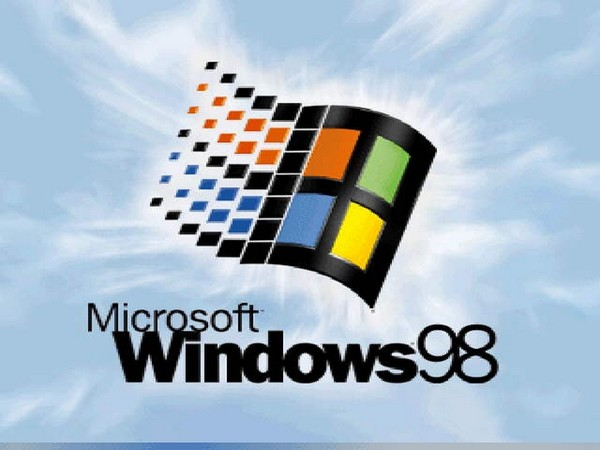 | X | 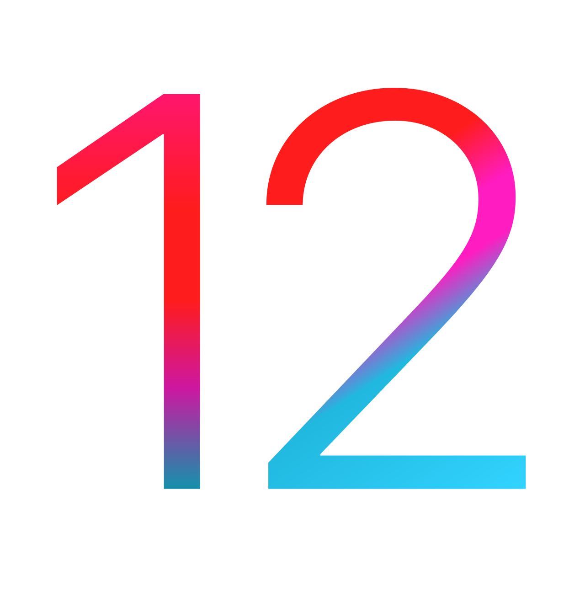 |
| Lançado em 25 de junho de 1998, o Windows 98 (codinome Memphis) foi um sistema operacional híbrido de 16/32 bits da Microsoft, sucessor do Windows 95. Focado na integração com a internet, trouxe o Internet Explorer 4.0 embutido, suporte nativo a USB, FAT32 e uma interface mais fluida. | X | O iOS 12, lançado em 2018, focou na melhoria de desempenho, especialmente em dispositivos mais antigos, introduzindo recursos como notificações agrupadas, Tempo de Uso para gerenciar o vício em telas, atalhos da Siri e Memojis. A atualização aumentou a velocidade de abertura de apps e teclado, além de aprimorar a privacidade. |
Christopher Lucas dos Santos Costa
Turma G